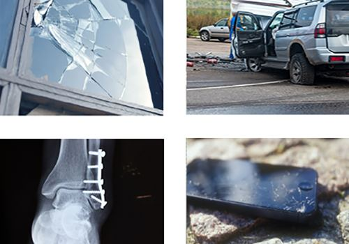

Opleiding particulier schade
Deze opleiding is interessant voor eigenaren van en medewerk(st)ers bij financieel advieskantoren die werkzaam zijn als schadeadviseur particulier in de binnendienst of in de buitendienst. Het hebben van of studerende voor het Wft Schade particulier diploma is voor het volgen van de opleiding niet strikt noodzakelijk. Wenselijk is wel dat de deelnemers beschikken over enige kennis van particuliere schadeverzekeringen. De opleiding is een aanvulling op deze basiskennis.
Artikelnummer . Bestellen en betalen gaat via de webshop op dfobv.nl.
Omschrijving

In samenwerking met Anita Hol–Bubeck heeftBureau DFO de 4-daagse opleiding Adviseur Schade Particulierontwikkeld.

Doelgroep
Deze opleiding is interessant voor eigenaren van en medewerk(st)ers bij financieel advieskantoren die werkzaam zijn als schadeadviseur particulier in de binnendienst of in de buitendienst. Het hebben van of studerende voor het Wft Schade particulier diploma is voor het volgen van de opleiding niet strikt noodzakelijk. Wenselijk is wel dat de deelnemers beschikken over enige kennis van particuliere schadeverzekeringen. De opleiding is een aanvulling op deze basiskennis.
Waarom deze opleiding?
Voor schadeadviseurs particulieren geldt de wettelijke plicht om een Wft Schade particulier diploma te hebben. Het blijkt dat het hebben van dat diploma niet voldoende is om de advieswerkzaamheden te verrichten. De kennis moet in de meest uiteenlopende praktijksituaties toegepast kunnen worden bij zowel een nieuw advies als bij een tussentijdse wijziging. In deze opleiding leren de deelnemers aan de hand van praktijkvoorbeelden -die de deelnemers zelf kunnen inbrengen- zo praktijkgericht mogelijk de vaardigheden om de schaderisico’s van particuliere klanten in kaart te brengen, te analyseren en om aan de hand daarvan te adviseren.
Inhoud van de opleiding
Tijdens de opleidingsdagen wordt er zoveel als mogelijk gewerkt aan de hand van de uitwerking van de huiswerkopdrachten die de deelnemers krijgen om thuis of op de werkplek uit te werken. De uitwerkingen van de opdrachten dienen als basis voor de bespreking tijdens de opleiding. Als het nodig blijkt te zijn wordt uiteraard wel de theoretische kennis over schaderisico’s en schadeverzekeringen besproken. Zoals schade:
- aan de eigen bewoonde woning, een vakantiehuis, huurdersbelang bij een huurwoning of eigenaarsbelang appartement;
- aan de inboedel en andere bijzondere bezittingen zoals verzamelingen, zonnepanelen en recreatie uitrusting;
- in het vermogen door aansprakelijkheid voor schade aan derden of juridische kosten bij een geschil;
- als gevolg van cyberincidenten;
- als gevolg van ziekte of een ongeval.
Maar tijdens opleidingsdagen is er vooral veel aandacht voor de benodigde vaardigheden om adequaat:
- te kunnen adviseren over schaderisico’s en de dekking op de te sluiten schadeverzekeringen voor particuliere klanten;
- te kunnen communiceren met medewerkers van de acceptatie afdeling verzekeraars of volmachtkantoren over de verzekeringsmogelijkheden en de eventueel te nemen preventieve maatregelen;
- te handelen in het kader van de diverse wettelijke bepalingen in het verzekeringsrecht, aansprakelijkheidsrecht en de zorgplicht van een adviseur.
Lesprogramma

Data en locatie
Hoevelaken start maart 2025
Hoevelaken start maart 2025
Dag 1 Donderdag 13 maart 2025 | 13:30 – 17:00 uur
Dag 2 Donderdag 27 maart 2025 | 9:30 – 17:00 uur
Dag 3 Donderdag 10 april 2025 | 9:30 – 17:00 uur
Dag 4 Donderdag 24 april 2025 | 9:30 – 17:00 uur
Jouw investering
Je investering voor deze meerdaagse opleiding bedraagt 287 euro vrijgesteld van btw per dag. (Je mag het totaalbedrag van 1147,50 euro, voor de gehele meerdaagse, ook in een keer voldoen)
Inschrijven 4-daagse opleiding
Inschrijven is nu mogelijk. Wil je meerdere deelnemers opgeven of wil je in termijnen betalen? Neem dan contact op met onze opleidingscoördinator.
Vragen
Heb je vragen, mail dan naar opleidingen@dfobv.nl.
Agaat van Ekeren, opleidingscoördinator Bureau DFO neemt dan contact met je op.
Of bekijk hier het complete aanbod opleidingen schade van Anita Hol-Bubeck
Passende opleidingen en masterclasses
Opleidingen van Bureau DFO
Praktijkgerichte trainingen, webinars en leergangen.
Workshop Elektrische voertuigen regelgeving, schade en verzekeren
Data en locaties: zie het opleidingsportaal
4-daagse opleiding Schade Zakelijk
Eerstvolgende: 11 mrt 2027 · Hoevelaken
Masterclass AI voor Schade Advieskantoren: Ga de Verdieping in met AI, Creëer en Automatiseer in 2026 (1 dagdeel, verdieping)
Data en locaties: zie het opleidingsportaal